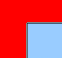

Représentation de l'information Laboratoire II
Prof. Andres Perez-Uribe
I. Objectif
Découvrir la manière dont les ordinateurs codent et stockent les informations du monde réel.II. Introduction:
Que vous écriviez un article, modifiez une image, construisiez une page web, écoutiez un morceau de musique ou regardiez un film sur votre ordinateur, vous avez à faire à des fichiers. Pour que ces fichiers puissent être ouverts, lus ou modifiés par vos logiciels préférés, il faut qu'ils aient un format. Un format est ce qui permet à un logiciel d'interpréter les données brutes d'un fichier. C'est, autrement dit, le mode de représentation de ces données. Souvent, les formats des fichiers sont indiqués par leur extension : le suffixe (souvent trois lettres) attaché au nom de fichier. Par exemple : mapageweb.htm est un fichier en format HTML. Il existe des formats spécifiques pour les images (par exemple JPEG, PNG, GIF, TIF, BMP), pour les textes sans mise en forme (ASCII, souvent indiqué comme TXT), pour les textes avec mise en forme (HTML, RTF, DOC), pour les pages prêtes à l'impression (PDF, PS) etc. Formats ouverts contre formats propriétaires: Afin de travailler avec un fichier, vous aurez besoin la plupart du temps d'un logiciel qui vous permette de lire, modifier ou enregistrer les données de ce fichier. Formats ouverts:
On dira que le format d'un fichier est ouvert si le mode de représentation de ses données est transparent et/ou sa spécification appartient au domaine public. Il s'agit principalement de standards établis par des autorités publiques ou des institutions internationales, dont le but est de fixer des normes assurant l'interopérabilité entre logiciels. Il existe pourtant plusieurs cas de formats ouverts promus par des entreprises ayant décidé de rendre publique la spécification de leurs formats. Formats propriétaires:
On dira qu'un format est propriétaire si le mode de représentation de ses données est opaque et sa spécification n'appartient pas au domaine public. Il s'agit de formats devéloppés par des entreprises afin de coder les données d'une application qu'elle produit: seuls les logiciels produits par cette entreprise seront capables de lire correctement et complètement les données contenues dans un fichier à format propriétaire. Les formats propriétaires peuvent être légalement protégés par des brevets et imposer le versement de royalties à tous ceux qui les utilisent.III. Explorer les différentes formes de représentation de l'information dans un ordinateur:
- Le codage des fichiers
Exercices:
1. Visualiser cette exécutable avec wxHexEditor fichierexe (bouton droit de la souris->save link as...)
2. Visualiser ce fichier texte avec wxHexEditor fichiertxt (bouton droit de la souris->save link as...)- Les images
Exercices:
Clicker sur l'image, puis enregistrez la dans votre répertoire de travail (bouton droit de la souris->save link as...)
1. Ouvrez l'image avec Gimp (clic droit -> Open with Gimp Image Editor) et changez le nombre maximum de couleurs de l'image à l'aide de la fonction qu'on trouve dans le menu Image->Mode->Indexed. Observez la perte de qualité de l'image.
2. Sauvez l'image (File->Export as...) en format BMP avec des nouveaux noms en utilisant 16 et 2 couleurs. Observez la taille des fichiers.
3. Ouvrez l'image originale avec Gimp et utilisez le menu Image->Scale Image. Diminuez de moitié la taille de l'image. Diminuez de moitié encore une fois. Maintenant, doublez la taille de l'image et observez la perte de qualité. Doublez encore une fois pour retrouver la taille de l'image originale.
4. Ouvrez l'image avec wxHexEditor. Remplacez plusieurs lignes (au moins 20) par la valeurs FF, environ au milieu du fichier. Puis enregistrez et ouvrez cette image. Que constatez-vous?!5. Le fichier lena_std.tiff est une image de Lena en format TIFF et le fichier lena_badfile.tiff est une image TIFF comportant une erreur de format. Essayez de visualiser l'image en double-cliquant par exemple, et ensuite, avec wxHexEditor afin de découvrir l'erreur de format.
L'image bitmap ci-dessous, contient un message ASCII dissimulé. Trouvez le message.
 7. Postscript vs GIF et autres.
Le code ci-dessous dessine une ligne droite en langage Postscript. Copiez ces lignes sur un ficher texte et sauvez-le avec un nom et l'extension
ps
.
%% Draws a line /inch {72 mul} def newpath 4 inch 1 inch moveto 1 inch 4 inch lineto closepath stroke showpageOuvrez le fichier ps et "zoomez" pour vérifier que la qualité de la ligne droite ne se détériore pas. Maintenant, copiez la version GIF de la même image et faite la même chose qu'avec le fichier ps. Que constatez-vous?!Les documents
Exercices:
1. Langage de balisage pour écrire des pages Web
Enregistrez sur votre disque la page HTML suivante : exemple (bouton droit de la souris->Save link as...).
Puis ouvrez le avec gedit (clic droit -> "Open With gedit") pour l'editer:
1. Rajouter la balise <html> au début du fichier pour indiquer qu'il s'agit d'un document formaté en HTML.
2. Rajouter la balise <h1> avant le titre du document et </h1> à la fin du titre.
3. Sauver et cliker sur le fichier exemple.html pour visualiser la page html en construction.
4. Rajouter la balise <center> avant la balise <h1> et la balise </center> après la balise </h1>.
5. Sauver et cliker sur le fichier exemple.html pour visualiser la page html en construction.
6. Rajouter la balise <h2> avant le mot Introduction et la balise </h2> après ce mot pour définir sa taille.
7. Sauver et cliker sur le fichier exemple.html pour visualiser la page html en construction.
8. Rajouter la balise <h2> avant Section 1 et la balise </h2> après.
9. Rajouter les balises <h3> et </h3> aux Sous-sections 1.1 et 1.2 pour définir leur tailles.
10. Rajouter la balise <b> avant le mot HTML et </b> à la fin de ce mot pour le mettre en gras.
11. Rajouter la balise <i> avant World Wide Web et </i> après pour le mettre en italique.
12. Rajouter <a href="http://fr.wikipedia.org/wiki/Serveur_Web"> avant le mot serveur et </a> après, pour créer un lien vers une page html hébergée dans une autre machine.
13. Rajouter la balise <hr> pour dessiner une ligne à la fin du document.
14. Rajouter <img src="http://www.heig-vd.ch/docs/default-source/presse-logos/heig-vd_logo_couleur_format_jpg.jpg"> pour introduire une image dans votre page html.
15. Rajouter la balise </html> pour indiquer la fin du code HTML.
2. Langage de balisage pour Google Earth
Une évolution des langages de balisage est la définition du langage de balisage générique XML (Extensible Markup Language) ou langage de balisage extensible. Un exemple de langage basé sur ce formaliste est le langage KML (Keyhole Markup Language) destiné à la gestion de l'affichage de données géospatiales dans des logiciels comme Google Earth et Google Maps.
1. Enregistrez sur votre disque le fichier KML suivant : exemple_position.kml (bouton droit de la souris->save link as...). Puis, ouvrez-le avec gedit (clic droit -> Open With gedit).
2. Ouvrez la page http://display-kml.appspot.com/ dans votre navigateur
3. Copiez-collez le contenu du fichier KML depuis gedit dans le panel sous "Type your KML here"
4. Cliquez sur "Show it on the map!"
5. Trouvez les coordonnées (longitude, latitude) d'un endroit qui vous intéresse (par exemple, là où vous habitez) en utilisant par exemple Google Maps.
6. Modifiez les coordonnées (et le texte à afficher) dans le KML.
7. Cliquez à nouveau sur "Show it on the map!"
La musique, les sons
HEIG-VD, 2016
{kind=link}